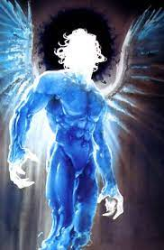

Kazann - Garth ennis
- Kazann is a formidable extraterrestrial being known for his intimidating appearance. He is a massive and muscular alien with a reptilian-like appearance. He has scaly green skin, sharp teeth, and a menacing presence
- Kazann is typically portrayed as a ruthless and cruel character. He has a fierce and relentless personality, often serving as a villain in Marvel storylines. He is willing to use extreme measures to achieve his goals, making him a formidable adversary for superheroes.
- Kazann possesses superhuman strength, durability, and regenerative abilities. He is a formidable warrior, skilled in hand-to-hand combat, and often wields advanced alien weaponry. His combat prowess and determination make him a formidable opponent in battles against Marvel superheroes.

Link to index